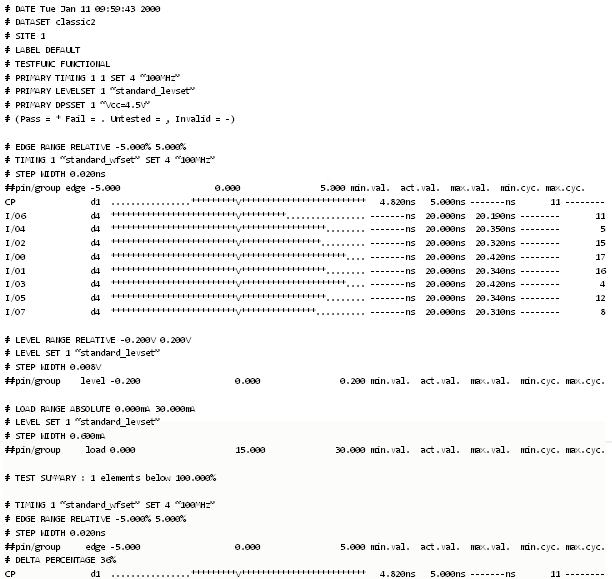

Example 3
This example uses a single port specification for its timing setup. It shows a run using dataset classic2:
ECHO DATE VERSION TESTERSTATE DISCONNECT SITE 1 LABEL DEFAULT TESTFUNC FUNCTIONAL PRIMARY TIMING 1 1 SET 4 "100MHz" PRIMARY LEVELSET 1 "standard_levset" PRIMARY DPSSET 1 "Vcc=4.5V" PINS @ TIMINGSET ALL LEVELSET ALL RESOURCES ALL METHOD PARALLEL RANGE ABSOLUTE PERIOD 99.000% 101.000% RANGE RELATIVE EDGEDELAY -5.000% 5.000% RANGE RELATIVE LEVEL -0.200V 0.200V RANGE ABSOLUTE CURRENT 0.000mA 30.000mA DPS OFF STEPMODE TEST_ALL_STEPS 50 TOP ALL 1 100.000 ALL_PASS_ON RUN
This example might yield a result file like that, below:
